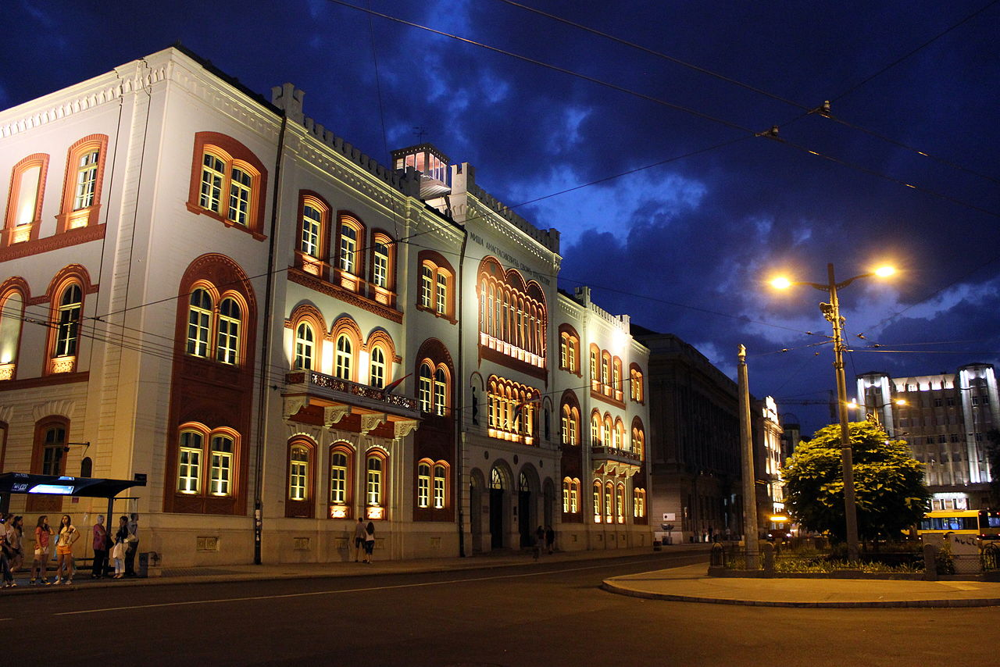

U utorak, 5. novembra 2024. godine, u svečanoj sali Rektorata, Univerziteta u Beogradu, održan je Dan otvorene nauke V.
Nakon uvodne sesije, u kojoj su prisutne pozdravili prof. dr Miroslav Trajanović, državni sekretar u Ministarstvu nauke, tehnološkog razvoja i inovacija, Republike Srbije i prof. dr Vladimir Cvetković, prorektor za nauku Univerziteta u Beogradu, održane su sledeće sesije:
- Platforma za otvorenu nauku - u kojoj su predstavljeni elementi nove Platforme za otvorenu nauku, za koju je planirano da bude objavljena krajem 2024. godine ili početkom 2025. godine,
- Projekti, mreže i inicijative - sesija je održana u dva dela i na njoj su govornice i govornici predstavili svoja iskustva u osnivanju, učešću, vođenju i priključivanju inicijativama i mrežama, kao i iskustva, koja uključuju učešće i vođenje projekata u oblasti otvorene nauke, u protekle dve godine,
- Panel diskusija na temu infrastruktura za otvorenu nauku u Srbiji i
- Nekonferencija - kreativan način da se svi učesnici uključe u diskusiju, putem platforme, koja omogućava da se postave pitanja na vrlo intuitivan način.
Informacije o Danu otvorene nauke V, uključujući i prezentacije svih govornika, dostupne su na sajtu Nacionalnog portala otvorene nauke u Srbiji: https://open.ac.rs/index.php/dan-otvorene-nauke-v

By Julian Nyča - Own work, CC BY-SA 3.0, https://commons.wikimedia.org/w/index.php?curid=45401120